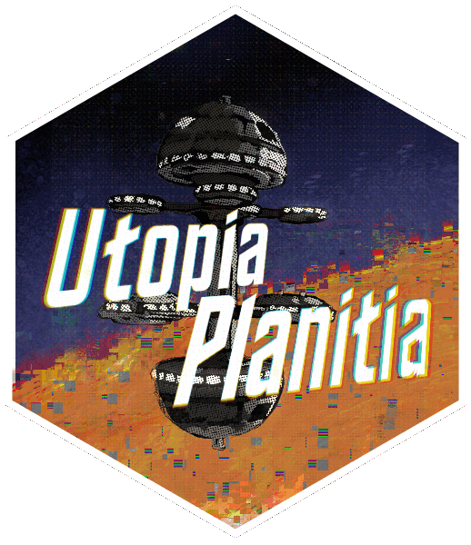

Utopia Planitia on Mars
UtopiaPlanitia 
{kind=link}


This package contains a wide variety of tests and statistics for (causal) machine learning models in R. Most of the functions relate to heterogeneous treatment effect analysis, including variable importance, heterogeneity tests, and visualization tools for causal forests built on the grf package.
Main Functions
-
LOCO variable importance for causal forests (
cf_loco()) and ranger models (loco()) -
Omnibus heterogeneity (HTE) testing combining calibration, high/low CATE, and RATE tests (
omni_hetero()) - Diagnostic, PDP, rank, and interaction plots for causal forests
-
S3 methods:
summary()andplot()forcausal_forestandcf_locoobjects
Installation
You can install UtopiaPlanitia from GitHub with:
# install.packages("pak")
pak::pak("CetiAlphaFive/UtopiaPlanitia")Quick start
library(grf)
library(UtopiaPlanitia)
set.seed(1995)
n <- 500; p <- 5
X <- matrix(rnorm(n * p), n, p)
colnames(X) <- paste0("X", 1:p)
W <- rbinom(n, 1, 0.5)
Y <- X[, 1] * W + rnorm(n)
cf <- causal_forest(X, Y, W)
# S3 summary: ATE, variable importance, heterogeneity tests
summary(cf)
# S3 plot: diagnostics (default), or type = "rank", "pdp", "inter"
plot(cf, type = "rank")
# LOCO variable importance
vi <- cf_loco(cf)
summary(vi)
plot(vi)